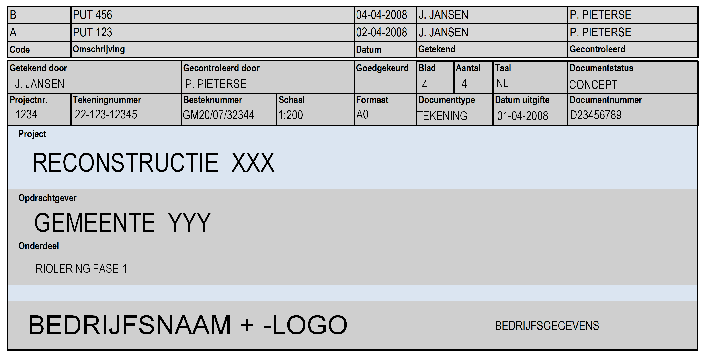
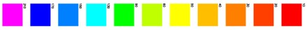
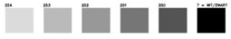
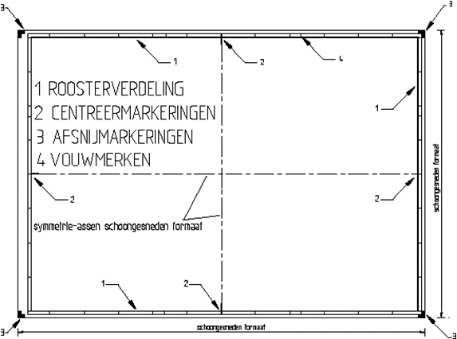
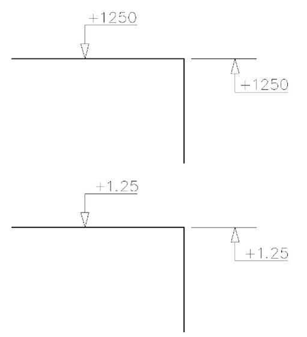
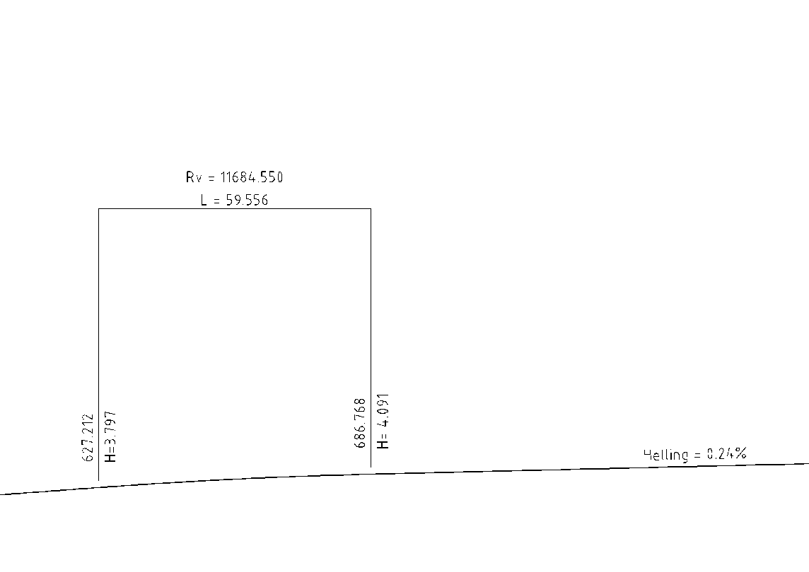
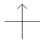

Dit document beschrijft de eisen van NLCS aan CAD modellen en tekeningen.
Er is een verschil tussen een CAD-bestand in de computer en representaties van dat bestand op geplotte of geprinte tekeningen. In de documentatie spreken we over ‘model’ als het gaat om het CAD bestand en over ‘tekening’ als het gaat om een representatie daarvan op een tekenblad (met een kader en een titelblok).
CAD-model Een model in een CAD-applicatie met daarin een weergave van ruimtelijke objecten
CAD-tekening Een printbare weergave van het CAD-model met een kader en een titelblok met informatie over de tekening
Status van dit document
Deze paragraaf
beschrijft de status van dit document ten tijde van publicatie. Het is
mogelijk dat er actuelere versies van dit document bestaan. Bekijk de
lijst van digiGO technische standaarden op
www.digigo.nu
en alle digiGO-publicaties via
www.digigo.nu.
Dit is een consultatieversie en is nog niet vastgesteld.
Een publicatie als in consultatie
impliceert geen onderschrijven door digiGO.
Belanghebbenden, geïnteresseerde partijen en anderen worden
uitgenodigd dit document te reviewen en hun commentaar in te zenden
vóór 1 februari 2025. Zowel inhoudelijk als
technisch commentaar als commentaar betreffende de
implementeerbaarheid is welkom.
GitHub Issues wordt gebruikt voor de discussie
van dit document. Eén issue per onderwerp vereenvoudigt de verwerking.
Reviewcommentaar mag ook achtergelaten worden als
Hypothes.is annotaties. Gebruik het publieke kanaal voor je
commentaar.
1. Inleiding
1.1 Doel documentatie
Dit document beschrijft de eisen aan CAD Modellen en tekeningen van de NLCS.
2. Metadata van tekeningen
2.1 Definitie metadata
Metadata Onder “Metadata” wordt in NLCS verstaan:
de (minimale) set van informatie over een tekening die noodzakelijk is voor adequaat document management.
Metadata worden als regel opgenomen in het titelblok van de tekening.
Attribuutnamen die worden gebruikt voor Metadata, mogen zowel in het Nederlands als in het Engels zijn.
2.2 Inhoud metadata
2.2.1 ISO 7200:2004
Wat betreft de inhoud van de Metadata in digitale tekeningen conformeert de NLCS zich aan [NEN_EN_ISO_7200_2004] “Gegevensvelden in titelblokken”. Deze norm onderscheidt identificerende en beschrijvende velden. Bepaalde gegevensvelden zijn verplicht, andere kunnen naar keuze wel of niet worden gebruikt. De informatie in de verplichte gegevensvelden is minimaal noodzakelijk voor het document management.
2.2.2 Identificatie
[NEN_EN_ISO_7200_2004] onderscheidt de volgende identificerende gegevensvelden (de tagnaam / attribuutnaam is een NLCS-specifieke toevoeging).
identificerende gegevensvelden conform [NEN_EN_ISO_7200_2004] met in blauw: NLCS-specifieke toevoeging
Veldnaam
Tagnaam / attribuutnaam
Taal-afhankelijk
Aanbevolen tekens
Verplicht
Verplicht voor document management
Wettige eigenaar
NL_META_EIGENAAR
-
-
ja
ja
Identificatienummer
NL_META_ID_NUMMER
nee
16
ja
ja
Wijzigingsindex
NL_META_REVISIE
nee
2
nee
nee
Uitgavedatum
NL_META_UITGAVE
nee
10
ja
ja
Segment- of bladnummer
NL_META_DOCUMENTNR of NL_META_BLADNUMMER
nee
4
ja
ja
Aantal segmenten of bladen
NL_META_SEGM-BLADEN of NL_META_AANTAL_BLADEN
nee
4
nee
nee
Taalcode
NL_META_TAAL
nee
4 per taal
nee
nee
Verantwoordelijke afdeling
NL_META_AFDELING
nee
10
nee
nee
Contactpersoon
NL_META_CONTACTPERSOON
nee
20
nee
nee
Verantwoordelijke persoon
NL_META_AUTORISATOR
nee
20
ja
ja
Auteur
NL_META_OPSTELLER
nee
20
ja
ja
Documentsoort
NL_META_DOCUMENTSOORT
ja
30
ja
ja
Classificatie/ trefwoorden
NL_META_TREFWOORDEN
nee
-
nee
nee
Documentstatus
NL_META_DOCUMENTSTATUS
ja
20
nee
nee
Papierformaat
NL_META_TEKENBLADFORMAAT
nee
4
nee
nee
De volgende gegevensvelden MOETEN verplicht ingevuld worden:
Wettige eigenaar: de naam van de eigenaar van het document; dit mag de officiële naam, een afgekorte naam eventueel aangevuld met een logo .
Identificatienummer: dit nummer moet – tenminste binnen de organisatie van de wettige eigenaar – uniek zijn.
Uitgavedatum: de datum dat het document officieel voor het eerst wordt uitgegeven.
Segment-/bladnummer: hierdoor worden bladen van elkaar onderscheiden.
Verantwoordelijke persoon: naam van de persoon die het document heeft goedgekeurd.
Auteur: de persoon die het document heeft opgesteld of gewijzigd.
Documentsoort: de rol van het document met betrekking tot zijn inhoud en wijze van weergave.
2.2.3 Beschrijving
De beschrijvende velden worden toegevoegd volgens de tabel.
beschrijvende gegevensvelden conform [NEN_EN_ISO_7200_2004] met in blauw: NLCS-specifieke toevoeging
Veldnaam
Tagnaam / attribuutnaam (NL, mag ook in Engels)
Taal-afhankelijk
Aanbevolen tekens
Verplicht
Verplicht voor document management
Benaming
NL_META_PROJECTOMSCHRIJVING
ja
25
ja
ja
Aanvullende benaming
NL_META_TEKENINGOMSCHRIJVING
ja
2x25
ja
ja
De volgende gegevensvelden MOETEN verplicht ingevuld worden:
Benaming: heeft betrekking op de inhoud van het document.
De benaming MOET worden gekozen uit vastgelegde begrippen. Afkortingen MOETEN worden vermeden.
Figuur 1 Een voorbeeld van een titelblok

Figuur 2 Voorbeeld van een titelblok met wijzigingsblok
3. Basisafspraken digitaal tekenen
3.1 Algemeen
Het invoeren van gegevens in 2D digitale modellen MOET gebeuren in schaal 1:1. Representaties van digitale modellen worden verschaald op het tekenblad weergegeven.
De te hanteren eenheid binnen het CAD-systeem is afhankelijk van de discipline. 1 (master) unit is gelijk aan 1 meter (wegen, waterwegen e.d.) of 1 millimeter (constructies). De gehanteerde eenheden MOETEN in de opmerkingen in het kader worden weergegeven.
Modellen en tekeningen MOETEN in het metrische stelsel te worden uitgevoerd.
Tijdens de verwerking van het ontwerp kan gebruik worden gemaakt van Layout (AutoCAD) of Sheet Models (MicroStation) om de plotcompositie samen te stellen. Het is essentieel om een werkmethodiek toe te passen, want discrepanties in een ontwerp dat in meerdere kaderbladen wordt gepresenteerd MOETEN worden vermeden. Het is aan te bevelen om het digitale model van het ontwerp zoveel mogelijk één geheel te laten en niet op te delen in aparte modellen voor de verschillende kaderbladen. Wanneer dit onvermijdelijk is, zijn aanvullende borgingsmaatregelen noodzakelijk om discrepanties in het ontwerp, c.q. de kaderbladen te voorkomen.
Kleuren, lijnstijlen en –dikten MOETEN altijd in de lagenstructuur worden geregeld. Objecten hebben in beginsel geen eigen kleur, lijnstijl of lijndikte; slechts bepaalde symbolen hebben een eigen kleur, lijnstijl en/of –dikte.
Dimensioneringen mogen nooit in geëxplodeerde stijl worden aangeleverd.
Dimensioneringen MOETEN altijd in één geheel zijn opgebouwd en moeten gerelateerd zijn aan de geometrie.
Indien de werkelijke maat afwijkt van de getekende maat, MOET de op tekening ingeschreven maat worden onderstreept of voorzien van een afbreekteken in de maatvoeringlijn.Figuur 3 een afbreekteken in de maatvoeringlijn
3.2 RD stelsel
Noot: RD stelsel
toelichting: RD staat voor Rijks Driehoekmeting, een stelsel dat in Nederland wordt gebruikt bij kaartvervaardiging. RD-coördinaten geven objecten een unieke plaatsaanduiding in Nederland, rekening houdend met de aardkromming. Het stelsel Amersfoort / RD new, EPSG 28992 , geeft goede resultaten bij de projectie in bijvoorbeeld Google Earth.
Alle objecten in een civieltechnisch model (in DWG/DGN-formaat) dat is gerelateerd aan een topologische ondergrond, moeten in het actuele RD-stelsel worden geplaatst.Tekeningen (dus representaties van het model) hoeven niet in het RD-stelsel te staan (NB: dit geldt bijvoorbeeld ook voor 2D tekeningen die worden gegenereerd uit een 3D model).
In Autodesk software < 2022 heeft RD new EPSG 28992 een foutieve definitie en wijkt daardoor af. Sinds versie 2022 is dit verholpen. Voor Autodesk versies < 2022 MOET Netherlands-RD, EPSG ontbreekt, gebruikt te worden.
RD-coördinaten in topologische ondergronden en/of daarop gebaseerde CAD modellen moeten altijd gehandhaafd blijven. Er mag op geen enkele wijze een verplaatsing plaatsvinden, niet tijdens het ontwerpen en niet tijdens een eventuele export.
Het bewerken van kaartbestanden, bijvoorbeeld door er informatie aan toe te voegen, moet altijd gebeuren in het RD-coördinatenstelsel waarin het bestand is opgebouwd.
Zie voor het aangeven van de oriëntatie ten opzichte van de rd-coördinaten op terreinmodellen ook Oriëntatieaanduidingen”.
3.3 Eenheden
Eenheden moeten volgens NEN 3698:1997 worden toegepast voor de vermelding van:
eenheden van lengte, oppervlak en inhoud;
maat- en nauwkeurigheidsaanduidingen.
Maataanduidingen moeten worden aangegeven in millimeters (mm) of in meters (m). Een uitzondering geldt voor de metrering van wegen, spoorwegen en waterwegen; deze moet in kilometers (km) of hectometers (hm) worden aangegeven.
De gebruikte eenheid voor maataanduidingen MOETEN als met de volgende teksten in het opmerkinggedeelte van de strook voor de verklaring boven of links naast het stempel worden weergegeven. De reden hiervoor is om duidelijkheid te verschaffen in de samenwerking tussen 'bouw' en 'infra' bedrijven:
Maten in meters, tenzij anders vermeld
Materiaalmaten in mm, tenzij anders vermeld
Peilmaten in meters t.o.v. N.A.P., tenzij anders vermeld
Maataanduidingen in een van de standaard afwijkende eenheid (bijvoorbeeld m in een mm tekening) moeten worden voorzien van deze eenheid.
Het te hanteren gradenstelsel is het 400-gradenstelsel voor landmeetkundige projecten (c.q. wanneer hoeken zijn of worden gerelateerd aan landmeetkundige coördinaten) en het 360-gradenstelsel voor constructieve en infraprojecten.
In het 400-gradenstelsel begint de 0-hoek in het Noorden, de rotatierichting is met de klok mee en het aantal graden van de hoek wordt in tekst op de tekening aangegeven (bijvoorbeeld: “80 g”). In het 360-gradenstelsel begint de 0-hoek in het Oosten, de rotatierichting is tegen de klok in en het aantal graden wordt met het gradensymbool op de tekening aangegeven (bijvoorbeeld: “80°”)
3.4 Plots
Een plot is een afdrukken van een tekeningen of ontwerp op papier of in pdf.
3.4.1 Plotschalen
Tekenobjecten MOETEN 1:1 worden getekend en op schaal geplot.
Conform NEN-EN-ISO 5455:1990/C1:1996 mogen de volgende aanbevolen plotschalen worden toegepast:
1:1 1:10 1:100 1:1000 1:10000
1:2 1:20 1:200 1:2000
1:5 1:50 1:500 1:5000
Conform NEN-EN-ISO 5455:1990/C1:1996 mogen ook schalen worden toegepast die ontstaan door vermenigvuldiging van een aanbevolen plotschaal met een gehele macht van 10 (bijvoorbeeld 1:50000 of 1:100000).
In uitzonderlijke gevallen, waarbij om functionele redenen geen van de aanbevolen schalen kunnen worden gebruikt, mogen schalen die ontstaan door vermenigvuldiging van een plotschaal 1:25 met een gehele macht van 10 worden gekozen (bijvoorbeeld 1:250 of 1:2500).
Bij gebruik van verschillende schalen in één tekening MOETEN deze schalen zowel op tekening als in het titelblok worden aangegeven.
Voor zowel de horizontale als de verticale richting MOET dezelfde schaal worden gebruikt. Uitzonderingen kunnen worden gemaakt voor lengteprofielen, waar de schalen in horizontale en verticale richting mogen verschillen.
Voor correcte werking en uitwisselbaarheid bij gebruik van “annotative scales” MOET je de volgende opbouw van naamgeving aanhouden:
NLCS_EENHEID_SCHAAL, bijvoorbeeld NLCS_M_1:200
3.4.2 Plotopmaak
De werkwijze voor het opmaken van plots is:
In het model (Modelspace [AutoCAD] / Design model [MicroStation]) wordt de tekening opgesteld.
In de Layout (AutoCAD) of Sheet Models (MicroStation) wordt een kader geplaatst op ware grootte.
In de layout/sheet wordt een viewport gemaakt, welke een schaalfactor meekrijgt zodat de verschaling goed staat.
Een kader verschalen is niet toegestaan.
3.5 Representatie van objecten
3.5.1 Algemeen
Objecten worden in NLCS gerepresenteerd door middel van:
Geometrie;
Arceringen;
Symbolen.
Waaraan per object een laag, een lijndikte, lijntype en lijnkleur zijn gekoppeld.
Representaties kunnen worden gecompleteerd en/of verduidelijkt met behulp van tekst en maatvoering.
Objecten kunnen in een tekening worden gerepresenteerd in aanzicht en in doorsnede en kunnen worden verduidelijkt met details.
De verschillende wijzen waarop objecten in NLCS kunnen worden gerepresenteerd, worden in de systematiek ELEMENTEN genoemd. Zie hier voor het overzicht van de ELEMENTEN.
Indien er geen symbool of arcering beschikbaar is binnen de NLCS mag een eigen symbool of arcering worden gebruikt.
Laagnamen en bijbehorende default waarden voor lijntypen, lijndikten en lijnkleuren zijn gedocumenteerd in de NLCS objectentabellen. Lijndikten kunnen variëren per STATUS.
Lijndikte en lijntype van een object in aanzicht wijken af van lijndikte en lijntype van hetzelfde object in doorsnede of als ‘niet zichtbaar’. De lijndikten, de –kleuren en –typen van een object in doorsnede en ‘niet zichtbaar’ worden afgeleid van de lijndikte, de lijnkleur en het lijntype van het object in aanzicht volgens een vaste set van afspraken. Deze afspraken zijn in het overzicht representatie samengevat.
Het doel van de NLCS is om de digitale omgeving van het tekenwerk te standaardiseren. Door het uniform opstellen van een digitaal model, zijn alle getekende objecten herkenbaar, herleidbaar en kan dit bij uitwisseling snel hergebruikt worden. Het wordt dan ook aangeraden om de presentatie van de NLCS in het digitale model niet aan te passen.
Als het voor het gebruik en de duidelijkheid van de tekening gewenst is om afwijkende kleuren, pendiktes of lijnstijlen toe te passen, wordt geadviseerd om dit in de ‘layout’ omgeving te regelen middels een Xref-Layer-Override (AutoCAD)/Reference-Level-Override (Microstation). Hiermee kan de eindgebruiker zijn eigen presentatie toepassen voor op het eindproduct (PDF), maar blijven de ‘bronbestanden/ het digitale model’ intact volgens de NLCS.
3.5.3 Lijndikte
In NLCS wordt bij elke laag en per STATUS een van de standaard lijndiktes voorgeschreven. Deze lijndiktes voldoen aan de [NEN_EN_ISO_128_2_2022]
Om de overzichtelijkheid of duidelijkheid van een tekening te verbeteren, mag een object ook een lijndikte dunner of dikker worden getekend. In onderstaande tabel staan de standaard lijndiktes met de bijbehorende dikkere of dunnere waarde.
Standaard lijndikten en toegestane dunnere of dikkere lijnen voor leesbaarheid
dunner
standaard
dikker
0.13
0.18
0.25
0.25
0.35
0.50
0.50
0.70
1.00
De lijndiktes in de database zijn niet gedifferentieerd per ELEMENTTYPE. Voor aanpassingen per ELEMENTTYPE zie de tabel in Overzicht representatie
3.5.4 Lijnstijlen
Voor objecten die (kunnen) worden gerepresenteerd door middel van lijnstijlen, zijn binnen NLCS lijnstijl(-bibliotheken) beschikbaar, per status.
De naamgeving van lijnstijlen is als volgt:
[STATUS]-BIBLIOTHEEKNAAM-LIJNSTIJLNAAM
waarbij:
STATUS kan zijn: B (Bestaand), T (Tijdelijk), V (Vervallen) of R (Revisie). Het invullen van de STATUS is optioneel en wordt alleen toegepast als de lijnstijl voor een STATUS afwijkt van de generieke lijnstijl (van de STATUS Nieuw);
BIBLIOTHEEK de naam is van de bibliotheek waarin de lijnstijl is opgenomen. Een lijnstijlenbibliotheek kan ook één enkele lijnstijl bevatten. Een bibliotheeknaam is opgebouwd uit de afkorting van de betreffende HOOFDGROEP (bijvoorbeeld: VH is de naam van de lijnstijlenbibliotheek die hoort bij de HOOFDGROEP VERHARDING).
LIJNSTIJLNAAM de naam is van de lijnstijl zelf (doorgaans gelijk aan de naam van het betreffende OBJECT of SUBOBJECT). De opbouw van de lijnstijlnaam is vrij. Er worden underscores (“_”) toegepast om het symbool nader te specificeren. De lijnstijlbibliotheken voorzien in varianten om grafisch onderscheid mogelijk te maken. De lijst van lijnstijlen waarvoor varianten beschikbaar zijn is opgenomen in bijlage 4: “Lijnstijl varianten”.
De standaard lijnstijl voor een OBJECT de weergave is van dat OBJECT in situatie met één representatie (dus zonder STATUS).
Een doorgetrokken lijn wordt in NLCS CONTINUOUS genoemd. Deze lijnstijl heeft dezelfde naam in AutoCAD, in Microstation is dit lijntype 0. Bij conversie tussen de beide paketten worden deze goed uitgewisseld.
Lijntypen zijn zodanig gekozen, dat ze in schaal 1:200 in een renvooiblokje van 5 cm goed herkenbaar en te onderscheiden zijn.
De lijntypen voor de NLCS zijn primair ontwikkeld voor het tekenen in schaal 1:200. In bepaalde lijntypen voor kabels en leidingen zijn symbolen opgenomen. Dit kan problemen opleveren wanneer op een kleinere schaal wordt getekend, bijvoorbeeld 1:500. Symbolen zijn dan niet meer te lezen of ‘lopen dicht’ wanneer meerdere kabels en leidingen naast elkaar worden getekend. Bij het tekenen van kabels en leidingen in schaal 1:500 wordt daarom aanbevolen om de lijnstijlen 50% van de plotschaal te maken. De lijnsymbolen zijn dan nog goed te lezen en te volgen op tekening.
In principe bestaat het lijntype voor een OBJECT met de STATUS V (Vervallen) uit het standaard lijntype voor dat OBJECT, met op regelmatige afstanden een dubbele schuine streep onder een hoek van 135o.
De lijnstijlen in de database zijn niet gedifferentieerd per ELEMENTTYPE. Voor aanpassingen per ELEMENTTYPE zie de tabel in Overzicht representatie
Noot: Voorbeelden van lijnstijlnamen
NLCS bevat een basisset lijnstijlen. Gebruikers, softwareontwikkelaars of toeleveranciers kunnen desgewenst eigen lijnstijl(-bibliotheken) toevoegen. Om te bewerkstelligen dat deze eigen lijnstijlen worden herkend door, en op de juiste wijze kunnen worden geplaatst met NLCS CAD-applicaties, MOET de naamgeving ervan worden opgebouwd als in deze paragraaf is beschreven. De NLCS voorziet niet in het uitwisselen van eigen bibliotheken, houdt dan ook rekening met de mogelijke beperkingen in het uitwisselen van eigen bibliotheken tussen verschillende software applicaties. Bronbestanden MOETEN beschikbaar gesteld te worden indien eigen lijnstijlen buiten de organisatie toegepast dienen te worden.
Lijnstijlen MOETEN herkenbaar zijn volgens het uitgangspunt 5cm bij een plotschaal van 1:200, dit komt overeen met een objectlengte van 10m.
3.5.5 Lijnkleur
De lijnkleuren in NLCS zijn afgestemd op technische tekeningen. Uitgangspunt hierbij is dat de lijnen op een plot in zwart worden afgedrukt. Een uitzondering hierop vormen eventuele grijsrasters.
Kleur wordt in NLCS met name gebruikt voor de grafische scheiding van objecten op het beeldscherm tijdens het ontwerpen en/of tekenen. De laagkleuren zijn dus niet primair bedoeld als presentatiekleuren, maar kunnen desgewenst ook worden gebruikt voor kleurenplots. In verband met dit laatste zijn lijnkleuren zo logisch mogelijk gekozen. Indien de tekening deels zwart / wit en deels kleur geplot wordt, kunnen RGB kleuren gebruikt worden. Om bij gebruik van RGB kleuren onderscheid te maken tussen statussen dient op laagniveau een transparantie van 50% toegepast te worden.
In de NLCS wordt gebruik gemaakt van het kleurenschema dat is weergegeven op de volgende pagina. Voor lijnen wordt gebruik gemaakt van de AutoCad kleuren uit de “10-serie” (10, 20, 30, enzovoort), de wisselkleur (de kleur welke wit op een zwarte achtergrond en zwart op een witte achtergrond wordt afgedrukt. Voor AutoCAD is dit kleur 7 en voor Microstation kleur 0). of de grijstinten (zwart in combinatie met transparantie) 250 t/m 254. De corresponderende RGB-waarden zijn weergegeven in de conversietabel. Het gebruik van andere kleuren is toegestaan, maar wordt in verband met de gewenste uniformiteit van tekenwerk ontraden.
Lijnkleuren worden per OBJECT en per STATUS weergegeven in de NLCS objectentabellen (zie hier).
Uitgangspunt van het kleurenschema is een consequent kleurgebruik. Hiervan kan worden afgeweken, wanneer dat noodzakelijk is voor de overzichtelijkheid en/of duidelijkheid van de tekening.
Kleuren worden niet gebruikt voor het bepalen van pendiktes bij het plotten (de pendikte wordt bepaald door de lineweight in de laag).
De lijnkleur is voor iedere STATUS (Nieuw, Bestaand, Vervallen, Tijdelijk) hetzelfde. Hiervoor is gekozen omdat is uitgegaan van een werkmethode waarbij de uitvoering van het tekenwerk in fases wordt gesplitst en gebruik wordt gemaakt van referenties (ofwel: nieuw, bestaand, vervallen en/of tijdelijk werk wordt niet in één, maar in aparte modellen gezet; een model van bestaand werk kan dan als referentie – in een grijstint – onder een model voor nieuw werk worden geplaatst).
3.5.6 Arceringen
Bij NLCS hoort een basisset van arceringen die worden aangeboden als arceringenbibliotheken. Een arceringenbibliotheek kan één of meer arceringen bevatten. Bij de samenstelling van de basisset is zoveel mogelijk gebruik gemaakt van toepasselijke NEN-normen.
Een arcering met aanduiding WG MOET een vaste nameetbare grootte krijgen volgens de plotschaal, deze arceringen moeten altijd op ware grote worden getekend.
Gebruikers en/of CAD-leveranciers kunnen desgewenst eigen arceringenbibliotheken of bibliotheken van derden toevoegen aan de basisset, mits die bibliotheken zijn opgebouwd volgens de [coderingssystematieksystematiek](#coderingssystematiek-lagenstructuur).
Wanneer een tekening met eigen gedefinieerde arceringen wordt uitgewisseld, moeten de arceringsdefinities meegeleverd worden.
Arceringen hebben een vaste lijndikte, kleuren volgens de objectentabellen en een vast lijntype:
lijndikte: 0,18;
kleuren van de arceringen staan in de objectentabellen.
lijntype: doorgetrokken lijn.
Vlakvullingen in grijs of kleur zijn toegestaan, al of niet in combinatie met arceringen.
3.5.7 Symbolen
Bij NLCS hoort een uitgebreide set van symbolen die worden aangeboden als symbolenbibliotheken. Een symbolenbibliotheek kan één of meer symbolen bevatten. Bij de samenstelling van de set is waar mogelijk gebruik gemaakt van toepasselijke NEN-normen.
Een symbool met aanduiding WG MOET een vaste nameetbare grootte krijgen volgens de plotschaal, deze symbolen moeten altijd op ware grote worden getekend.
Een symbool met aanduiding FS MOET een vaste schaal (fixed size) op papier krijgen, bijvoorbeeld stempels en dergelijke.
Een symbool zonder aanduiding is vrij verschaalbaar ten gunste van de leesbaarheid van de tekening.
Gebruikers en/of CAD-leveranciers kunnen voor objecten waarvoor in NLCS geen gewenste symbolen zijn opgenomen, eigen symbolenbibliotheken of bibliotheken van derden toevoegen, mits die bibliotheken zijn opgebouwd volgens de [coderingssystematieksystematiek](#coderingssystematiek-lagenstructuur).
Symbolen zijn in principe in de schaal 1:1 opgebouwd.
Een beperkt aantal symbolen heeft vaste kleuren, die onafhankelijk zijn van de lagen waarin ze worden geplaatst. Deze symbolen mogen worden geplaatst by object. (Voorbeelden zijn symbolen van verkeersborden).
De betekenis van symbolen MOET in een verklaring worden weergegeven.
3.5.8 Oppervlak
Het ELEMENT Oppervlak (O) wordt met name gebruikt, wanneer voor (terrein-)oppervlakken met behulp van het model hoeveelheden moeten worden bepaald. Contourlijnen van oppervlakken moeten altijd worden getekend in lijndikte 0,18 met een doorgetrokken lijn.
3.5.9 Vlakvulling
Het ELEMENT Vlakvulling (V) is bedoeld om vlakken te voorzien van een vulkleur. Het ELEMENT V wordt gebruikt voor planvormingstekeningen (zoals exploitatie-, verkavelings-, inrichtings- en matenplannen), presentatietekeningen en/of wanneer de tekenaar een vlak wil voorzien van zowel een arcering als een vulkleur. V-elementen hebben in de objectentabellen RGB-kleuren of grijswaarden (CAD-kleuren 250 t/m 254). Contourlijnen van kleurvlakken worden getekend met een doorgetrokken lijn. Lijndikten zijn in de objectentabellen aangegeven.
3.5.9.1 Dikke of dunne tegels verhardingen
Omdat er tussen verschillende pakketten geen uitwisseling mogelijk is van de combinatie van een arcering en een vlakvulling, krijgen de arcering en de vlakvulling een andere laag.
Dat betekent ook dat er geen standaard arceringen met vlakvulling beschikbaar zijn om het verschil tussen dunne en dikke tegels te kunnen aanduiden. Daarom zal de tekenaar zelf een vlakvulling moeten aanmaken om dikke tegels aan te geven met een grijze vlakvulling op de tekening.
Figuur 4 Een grijze vlakvulling achter de arcering geeft een dikke tegel aan op de tekening.'
3.5.10 Overzicht representatie
In de NLCS is vastgelegd, dat ieder (sub-)object op een aparte laag wordt geplaatst (by layer, c.q. by level).
De representatie van een (sub-)object wordt in NLCS geregeld door de eigenschappen van de laag waarin het (sub-)object wordt geplaatst. De eigenschappen van lagen zijn in NLCS bepaald door het vastleggen van waarden voor de lijndikte, de lijnkleur, het lijntype en de kleur van eventuele vlakvulling per laag. Een uitzondering geldt voor een aantal symbolen, die by object mogen worden geplaatst.
Per (sub-)object zijn separate lagen – dus verschillende eigenschappen – gedefinieerd per STATUS
dat het betreffende (sub-)object kan hebben.
In de onderstaande tabel is samengevat hoe de eigenschappen zijn/worden bepaald voor de verschillende ELEMENTEN waarin (sub-)objecten kunnen worden gerepresenteerd.
ELEMENT
LIJNDIKTE
KLEUR
LIJNTYPE
G
objectentabellen G: [status] lineweight
objectentabellen G: [status] color
objectentabellen G: [status] linetype
GN
één pendikte dunner dan aangegeven in objectentabellen G: [status] lineweight
Status bestaand 0.18, overige statussen 0.25. Indien de symbolen door in elkaar overvloeiende lijnen niet meer goed leesbaar zijn, bijvoorbeeld bij bestratingssymbolen, mogen deze een pendikte kleiner krijgen
object in ZZ, objectentabellen G: [status] lineweight
object in ZZ, objectentabellen G: [status] color
object in Z,Z objectentabellen G: [status] linetype
T**V
als T** object in ZZ, objectentabellen G: [status] lineweight
als T** object in ZZ, objectentabellen G: [status] color
als T** object in ZZ, objectentabellen G: [status] linetype
V
objectentabellen G: [status] lineweight
objectentabellen V: [status] color V
doorgetrokken lijn
[3] In de regel geldt dat lijnen van het ELEMENT GD/SD worden getekend met de pen die in de NLCS objectentabellen is aangegeven voor het ELEMENT G (Geometrie). Een andere lijndikte binnen dezelfde lijngroep mag zoals altijd gekozen worden als dit de leesbaarheid van de tekening ten goede komt.
[4] Als in GD een doorgetrokken lijn niet logisch is, omdat het geen fysiek object betreft maar bijvoorbeeld een afbreeklijn, NAP lijn of 'bestaand' maaiveld, mag een ander lijntype worden toegepast.
3.5.11 CAD kleuren
De onderstaande afbeeldingen hebben kleurcodes uit AutoCAD

Figuur 5 Kleuren in de '10-serie'
Figuur 6 Kleuren in de '12-serie'

Figuur 7 Wit/zwart en grijstinten
Conversietabel CAD-kleuren – RGB-codes: Wit/zwart en grijstinten
CAD
R
G
B
12
189
0
0
22
189
46
0
32
189
94
0
42
189
141
0
52
189
189
0
62
141
189
0
92
0
189
0
132
0
189
189
152
0
94
189
172
0
0
189
212
189
0
189
4. Uiterlijk van de tekening
4.1 Tekenbladformaten
Afmetingen van tekenbladen zijn gebaseerd op NEN-EN-ISO 5457:1999 “Technische productdocumentatie - Formaten en inrichting van tekenbladen”. Dat houdt in dat wordt uitgegaan van standaard A-formaten:
A4 210 mm x 297 mm;
A3 297 mm x 420 mm;
A2 420 mm x 594 mm;
A1 594 mm x 841 mm;
A0 841 mm x 1189 mm.
Naast deze standaard A-formaten zijn verlengde A-formaten toegestaan (de norm heeft betrekking op verlengde formaten kleiner dan A0).
VERLENGDE A-FORMATEN
Aanduiding
Nominale maat in mm
Gebruikspositie
A1.0
594 x 1189
liggend
A2.1
420 x 841
liggend
A2.0
420 x 1189
liggend
A3.2
297 x 594
liggend
A3.1
297 x 841
liggend
A3.0
297 x 1189
liggend
Verlengde formaten langer dan A0, MOETEN worden aangeduid met het oorspronkelijke
A-formaat en de afmetingen, zoals: A0-841x1680. Daarbij geldt dat de lengtemaat altijd een veelvoud MOET zijn van 210 mm. Bij NLCS worden de volgende symbolen geleverd voor tekenbladen:
A0, A1, A2, A3 en A4 (5 stuks), A1.0, A2.1, A2.0, A3.2, A3.1, A3.0 (6 stuks), lange formaten A0, A1, A2 en A3 in 6210, 7210, 8210, 9210 en 10*210 mm (20 stuks). Voor nog langer formaten kunnen gebruikers desgewenst zelf symbolen toevoegen.
De in de normen NEN 2302:1983 en NEN 379:1980 genoemde vouwmethoden zijn van toepassing. Dit houdt in dat de tekenbladen in opgevouwen toestand even groot zijn als het staande A4-formaat. Het titelblok is daarbij aan de voorzijde zichtbaar.
4.2 Tekenruimte, kader en rand
4.2.1 Algemeen
Conform NEN-EN-ISO 5457:1999 geldt het volgende.
De tekening MOET worden voorzien van kader en rand.
De tekenruimte wordt begrensd door het kader.
Het kader MOET worden getekend met een lijn met een dikte van 0.7 mm
De rand wordt begrensd door het kader en de afsnijkanten.
De afsnijkanten worden getekend met een lijn met een dikte van 0.25 mm.
De rand heeft aan de linkerzijde een breedte van 20 mm. Alle overige randen hebben een breedte van 10 mm.
4.2.2 Merktekens in de rand
De volgende merktekens worden onderscheiden:
Roosterverdeling.
Centreermarkeringen.
Afsnijmarkeringen.
Vouwmerken.

Figuur 8 Voorbeeld merktekens in de rand
Roosterverdeling
De roosterverdeling bestaat uit velden en MOET worden begrensd door het kader en een lijn 5 mm buiten het kader. De lengte van de velden is 50 mm, te beginnen bij de symmetrieassen van het schoongesneden formaat (centreermarkeringen).
De lijndikte van de roosterverdeling bedraagt 0,25 mm.
Het toepassen van de roosterverdeling is optioneel.
Optioneel: de roosterverdeling kan worden voorzien van letters en cijfers, letterhoogte 3.5.
Centreermarkeringen
Centreermarkeringen geven het midden van de tekening aan.
Bij alle formaten, met uitzondering van A4 en A4 liggend, MOETEN deze markeringen beginnen bij de buitenkant van de roosterverdeling en eindigen 5mm voorbij het kader in de tekenruimte.
Bij de formaten A4 en A4 liggend MOETEN de centreermarkeringen beginnen bij de buitenkant van de roosterverdeling en eindigen op het kader.
Centreermarkeringen MOETEN op de symmetrie-assen van het schoongesneden formaat staan.
Centreermarkeringen MOETEN een lijndikte hebben van 0.70 mm.
Het toepassen van centreermarkeringen is optioneel.
Afsnijmarkeringen
Afsnijmarkeringen geven aan waar de tekeningen afgesneden MOET worden om het juiste formaat te krijgen.
Afsnijmarkeringen MOETEN op de vier hoeken van het schoongesneden formaat staan en hebben de vorm van twee elkaar gedeeltelijk overlappende rechthoeken met de afmetingen van 10 mm x 5 mm.
Het toepassen van de afsnijmarkeringen is optioneel.
e. Vouwmerken
Vouwmerken geven aan waar de tekeningen MOETEN worden gevouwen om uiteindelijk het A4 formaat te krijgen.
Vouwmerken MOETEN in de rand staan en worden aangegeven met een lijn van 5 mm. De verdeling van de vouwmerken is in een patroon geplaatst met een onderlinge vertikale afstand van 297 mm en een onderlinge horizontale afstand van 210 mm. De verdeling wordt gerekend vanuit de rechter onderhoek van de tekening.
Vouwmerken aangegeven worden met een lijn van 5 mm met een gesloten pijlpunt. Vouwmerken hebben een lijndikte van 0.18 mm.
Het toepassen van de vouwmerken is optioneel.
De roosterverdeling en verschillende markering kunnen naar behoefte worden aan- en uitgezet (ze staan default uit).
4.3 Indeling tekenblad
4.3.1 Algemeen
Een tekening MOET een titelblok hebben. Het titelblok MOET altijd rechtsonder op het tekenblad staan binnen een strook van 210 mm breed (breedte van een A4-formaat).
Figuur 9 Indeling tekenblad
De verklaring van lijnen, arceringen en symbolen wordt bij voorkeur boven het titelblok en de situatie/bladindeling geplaatst, in dezelfde strook van 210 mm. Een alternatief is om de verklaring linksonder tegen het titelblad te plaatsen en indien nodig naar links uit te breiden.
4.3.2 Titelblok
Voorschriften voor de vormgeving en het gebruik van het titelblok zijn ontleend aan NEN-EN-ISO 5457:1999 “Technische productdocumentatie - Formaten en inrichting van tekenbladen”.
Het titelblok heeft een rechthoekige vorm. De afmetingen, nadere vormgeving en exacte indeling van het titelblok en de velden daarbinnen zijn niet voorgeschreven, doch de maximale breedte MOET 210 mm zijn. Dit opdat het titelblok volledig zichtbaar blijft wanneer een tekening op A4-formaat wordt gevouwen.
Op alle papierformaten wordt – per bedrijf of organisatie – hetzelfde ‘standaard’ titelblok toegepast. Een uitzondering kan worden gemaakt voor de formaten A3 en A4, wanneer het standaard titelblok zoveel ruimte in beslag neemt dat er geen ruimte meer is voor de tekening.
In de titelblokken MOETEN evenwel minimaal de verplichte velden worden opgenomen als aangegeven bij de metadata.
Bij de formaten A0 t/m A3 bevindt het titelblok zich in de rechter onderhoek van de tekenruimte. Bij A4 formaat bevindt het zich aan de onderzijde.
Het titelblok bestaat uit verschillende gegevensvelden.
Ieder bedrijf en iedere organisatie kan – binnen de hier geschetste kaders – het titelblok naar eigen inzicht vormgeven en inrichten.
Het verdient aanbeveling om de gegevensvelden zodanig te groeperen, dat de velden die bedoeld zijn voor alle documenten, in het onderste deel van het titelblok worden geplaatst en dat de aanvullende velden die bedoeld zijn voor specifieke documenten, in het bovenste deel worden geplaatst.
4.3.3 Verklaring
In de verklaring wordt de betekenis van lijnen, symbolen etc. verklaard, onderverdeeld in relevante categorieën.
Het vak “OPMERKINGEN” (zie onderstaande figuur) dient voor algemene opmerkingen als:
Maten in meters, tenzij anders vermeld
Materiaalmaten in mm, tenzij anders vermeld
Peilmaten in meters t.o.v. N.A.P., tenzij anders vermeld
Figuur 10 Positie van het opmerkingenvak
4.3.4 Noordpijl
In de gevallen waarin een ondergrond/topologie wordt toegepast, MOET op een logische plaats een noordpijl worden geplaatst, bij voorkeur in de rechterstrook van 210 mm boven het titelblok. De situering van de tekening (situatie) is bij voorkeur noord gericht (de noordpijl wijst naar de bovenkant van de tekening).
4.3.5 Schaalbalk
Iedere tekening MOET worden voorzien van een schaalbalk, behalve wanneer meerdere schalen op de tekening voorkomen, de tekening is aangemaakt met ‘vertrokken schaal’ (bij lengteprofielen) of wanneer het gaat om detailtekeningen.
Figuur 11 Schaalbalk
4.3.6 Ordening van details en profielen
Details en/of profielen MOETEN op een tekenblad logisch worden gegroepeerd, in volgorde en op regelmatige afstanden van elkaar, inclusief nummering (zie het navolgende model; de volgorde kan in zowel verticale als horizontale richting worden aangegeven).
Figuur 12 Ordening van details en profielen
Wanneer meerdere situaties achter elkaar worden getekend, bijvoorbeeld bij een tracé, MOET als volgt rekening worden gehouden met de nummering van – bijvoorbeeld – dwarsprofielen:
het tellen begint bij het tekeningenhoofd en van daaruit naar links en naar boven (zie het onderstaande model), tenzij de situatie dwingt tot een andere indeling.
Figuur 13 Opvolging van tekeningen
4.4 Verwijzingssymbolen
4.4.1 Verwijzingssymbolen algemeen
Verwijzingssymbolen zijn aanwijzingen op de tekening, die helpen om de tekening goed leesbaar en interpreteerbaar te maken. Er zijn verwijzingssymbolen voor:
verwijzing naar een doorsnede;
verwijzing naar een aanzicht;
verwijzing naar details;
verwijzing naar een wijziging.
NLCS verwijzingssymbolen zijn aanbevolen symbolen. Gebruik van eigen symbolen is toegestaan, mits consequent en volgens een consequente stijl toegepast.
4.4.2 Verwijzing naar een doorsnede
Een verwijzing naar een doorsnede wordt aangeven met een doorsnedensymbool. Dit bestaat uit een lijn van het type "gemengde streeplijn" met een lijndikte van 0.18 mm. Haaks op de lijn staan pijlen, die de kijkrichting aangeven. De pijlen zijn voorzien van een letter die de doorsnede specificeert. De (geplotte) teksthoogte is 5.0 mm.
Figuur 14 Voorbeeld aanbevolen doorsnedensymbool
4.4.3 Verwijzing naar een aanzicht
Een verwijzing naar een aanzicht wordt aangeven met een aanzichtsymbool. Dit bestaat uit een pijl volgens onderstaand model (conform NEN 3870) en een hoofdletter die het aanzicht specificeert. De lijndikte van de pijl bedraagt 0.35 mm. De (geplotte) teksthoogte is 5.0 mm. Het is toegestaan om een aanzicht aan te geven met dubbele pijl en letters, zoals bij verwijzingen naar doorsneden.
Figuur 15 Voorbeeld aanbevolen aanzichtsymbool
4.4.4 Verwijzing naar een detail
Een verwijzing naar een detail wordt aangegeven met een omkadering, die bestaat uit een cirkel, rechthoek of vierkant, lijntype “gemengde streeplijn”. De lijndikte van de cirkel/het rechthoek of vierkant bedraagt 0,35 mm.
Een verwijzing naar een detail op een ander tekenblad wordt aangeduid met een verwijzingssymbool volgens nevenstaand model, voorzien van een open pijlpunt en een cirkel. In de cirkel wordt boven de lijn het detailnummer geschreven in letterhoogte 5,0. Onder de lijn wordt het tekeningreferentienummer geplaatst van de tekening waarnaar wordt verwezen, in letterhoogte 2,5 mm.
Indien wordt verwezen naar een detail op hetzelfde blad, wordt in plaats van het tekeningreferentienummer een liggend streepje (koppelteken) geplaatst.
Figuur 16 Verwijzing naar een detail
4.4.5 Verwijzing naar een wijziging
Het verwijzen naar een wijziging (‘aanpijlen’ van een wijziging) is niet verplicht in de NLCS, maar als voor een verwijzing wordt gekozen, geldt het gestelde onder lid *
Een verwijzing naar een wijziging wordt aangegeven met een wijzigingspijl. Deze bestaat uit een pijl met een ingeschreven wijzigingsletter of cijfer. Dezelfde letter of hetzelfde getal MOET worden opgenomen in het wijzigingsblok. De (geplotte) teksthoogte bedraagt 7.0 mm.
Voorbeeld aanbevolen symbool:
Figuur 17 Verwijzing naar een wijziging
4.5 Maatvoering
4.5.1 Algemeen
Wat betreft maatvoering worden eisen gesteld aan de nauwkeurigheid en aan maataanduidingen (maatvoeringstijlen).
Wat betreft maataanduidingen wordt onderscheid gemaakt in:
maataanduiding van rechte delen;
maataanduiding van cirkels/bogen (lengtemaat);
maataanduiding van cirkels/bogen (diameter/straal);
maataanduidingen van hoeken;
plaatsing en lettertype van bemating;
aanduiding van peilmaten;
aanduiding van metrering;
aanduiding van alignementen;
aanduiding van coördinaten.
Maatvoeringen MOETEN een verschillende kleur en lijndikte krijgen, afhankelijk van de gebruikte teksthoogte.
Figuur 18
Maatvoeringen krijgen een verschillende kleur en lijndikte, afhankelijk van de gebruikte teksthoogte
4.5.2 Nauwkeurigheid
Bij het gebruik van een tekening MOETEN altijd de geschreven maten worden gebruikt. Opmeten en omrekenen via de schaal is niet toegestaan.
De punt (.) wordt gebruikt als decimaalteken. Onderbouwing: Dit wijkt af van ISO-normen, maar sluit aan op de CAD pakketten waarvoor deze standaard is gemaakt.
Er wordt geen gebruik gemaakt van een scheidingsteken voor duizendtallen, ook weer in aansluiting op de gebruikte CAD-pakketten.
De nauwkeurigheid van de aangegeven maten is afhankelijk van de eenheid:
Eenheid van maatvoering
Type bemating
Eenheid
Aantal significante cijfers achter het decimaalteken
[4] De nauwkeurigheid is afhankelijk van de gemaakte (project) afspraken.
4.5.3 Maataanduiding van rechte delen
Maten van rechte delen MOETEN met één van de onderstaande drie methoden worden aangegeven. Binnen een project dient consequent dezelfde methode te worden gebruikt.
Figuur 19 De maat aangeven met een maatlijn met haaks daarop twee hulplijnen. De maatlijn en de hulplijn doortrekken tot 2 mm voorbij het snijpunt. Op het snijpunt een (open)bolletje (“dot”) van 1 mm plaatsen. De afstand tussen een hulplijn en het model is vrij te bepalen. Alle lijnen hebben een dikte van 0,18 mm
Figuur 20 De maataanduiding aangeven met een maatlijn met haaks daarop twee hulplijnen. De maatlijn en de hulplijn doortrekken tot 2 mm voorbij het snijpunt. Op het snijpunt een lijntje van 2 mm (een ‘schrap’ of ‘tick’), onder 50 g / 45° plaatsen. De afstand tussen een hulplijn en het model bedraagt is vrij te bepalen Alle lijnen hebben een dikte van 0,18 mm
Figuur 21 De maataanduiding aangeven met een maatlijn met haaks daarop twee hulplijnen. De hulplijn doortrekken tot 2 mm voorbij het snijpunt. Op het snijpunt een gesloten pijlpunt van 2.5 mm plaatsen. De afstand tussen een hulplijn en het model is vrij te bepalen. Alle lijnen hebben een dikte van 0,18 mm.
4.6 Maataanduidingen van cirkels/bogen (lengtemaat)
De maataanduiding van de booglengte MOET worden aangegeven met een maatlijn evenwijdig aan de boog - bij voorkeur buiten de afbeelding - met haaks daarop twee hulplijnen. De hulplijn doortrekken tot 2 mm voorbij het snijpunt. Op het snijpunt wordt een pijlpunt geplaatst van 2.5 mm. De afstand tussen een hulplijn en het model bedraagt 2 mm. Alle lijnen hebben een dikte van 0,18 mm.
Figuur 22 Voorbeeld Maataanduidingen van cirkels/bogen (lengtemaat)
Het MOET duidelijk zijn voor welke boog de maataanduiding geldt. Dit kan bijvoorbeeld met een pijl die loodrecht op de maatlijn staat en die de boog aanwijst waarvoor de maataanduiding geldt (zie het voorbeeld).
Een andere mogelijkheid is om de maat van de straal van de betreffende cirkel aan te geven met behulp van een straallijn (zie hier) en bij de maataanduiding van de cirkelboog aan te geven dat deze de boog betreft, waarvoor de straal is aangegeven.
4.6.1 Aanduiding van cirkels/bogen (diameter/straal)
De maataanduiding van de straal van een cirkel MOET worden aangegeven met een maatlijn vanuit het middelpunt en een pijlpunt rakend aan de cirkel. De maataanduiding van de diameter van een cirkel MOET worden aangegeven met een maatlijn door het middelpunt en twee pijlpunten rakend aan de cirkel. Indien, bij een kleine straal of diameter, de ruimte voor de pijlpunt(en) en de getalswaarde ontbreekt, mogen deze ook aan buitenzijde van de cirkel of boog worden geplaatst. De getalswaarde bij een diameter MOET worden voorzien van het symbool “ Ø “. De getalswaarde bij een straal MOET worden voorzien van het symbool: “ R= “.
Figuur 23 Voorbeeld Aanduiding van cirkels/bogen (diameter/straal)
4.6.2 Maataanduidingen van hoeken
De maataanduiding van een hoek wordt aangeven met een boog voorzien van 2 pijlpunten van 2.5 mm. Alle lijnen hebben een dikte van 0,18 mm. De getalswaarde van de hoek MOET worden aangeven in het 360 gradenstelsel (voor constructies en in infraprojecten) of het 400 gradenstelsel (in landmeetkundig werk). De getalswaarde van de hoek MOET worden aangevuld met “o”, respectievelijk "g". Indien, bij een kleine hoek, de ruimte voor de pijlpunten en de getalswaarde ontbreekt, mogen deze ook aan buitenzijde van de hoek worden geplaatst. Naloopnullen mogen worden weggelaten.
Voorbeelden:
Figuur 24 Voorbeeld Maataanduidingen van hoeken
Figuur 25 Voorbeeld Maataanduidingen van hoeken
4.6.3 Plaatsing van bemating
Waar mogelijk MOET de getalswaarde van de maat van een recht deel of boog/cirkel gecentreerd op de maatlijn worden geplaatst.
De getalswaarde MOET 1 mm boven de maatlijn worden geplaatst.
Een maat MOET van links naar rechts of van onder naar boven leesbaar zijn.
4.6.4 Hoogtematen
Peil: Bij een punt in de tekening aangegeven hoogte ten opzichte van N.A.P. of een ander afgesproken peil.
Hoogtematen boven een referentiepeil MOETEN worden aangeven met een plusteken (+) en beneden een referentiepeil met een minteken (-) voor de getalswaarde.
Hoogtematen MOETEN worden aangeven in meters of in millimeters ten opzichte van N.A.P. of ten opzichte van een afgesproken peil.
De vorm van de hoogteaanduiding is vrij, mits deze vorm consequent wordt gebruikt. In de onderstaande figuur zijn verschillende voorbeelden gegeven.
De verwijzingslijn met tekst wordt getekend d.m.v. een lijn met een lengte afhankelijk van de bijgeplaatste tekst met de tekst boven de verwijzingslijn.
Bestaande maten MOETEN in cursief lettertype worden weergegeven,
Nieuwe maten MOETEN in recht lettertype worden weergegeven.
Voorbeelden:
Figuur 26 Voorbeeld hoogtematen

Figuur 27 Voorbeeld hoogtematen
4.6.5 Metrering
De metrering in een specifiek punt MOET worden aangegeven met behulp van een lijn met tekst.
Het snijpunt tussen deze lijn en de as van het object (bijvoorbeeld de weg) MOET de locatie van het betreffende punt weergeven.
De lijn MOET in het betreffende punt loodrecht staan op de as van het object, waarop de metrering betrekking heeft.
De lengte van de lijn MOET passen bij de bijgeplaatste tekst.
Figuur 28 Voorbeeld Metrering
4.6.6 Alignementen
4.6.6.1 Horizontal
Het horizontale alignement MOET worden aangegeven met de stralen en toegepaste A-waarde indien een overgangsboog is gehanteerd.
Hiervoor MOET een rechte aanhaallijn worden gebruikt.
De bijgeplaatste tekst MOET boven of onder de aanhaallijn worden geplaatst.
De straal wordt voorafgegaan door Rh= en de A waarde door A=.
Figuur 29 Voorbeeld alignementen
4.6.6.2 Verticaal
Het verticale alignement MOET worden aangegeven met de straal en lengte van de top- en dalbogen en met de metrering en hoogte van de tangent en knikpunten.
De straal en lengte van de boog MOETEN worden aangegeven boven een horizontale lijn die aan weerskanten via twee verticale uithaallijnen naar het begin en einde van de boogeinden lopen.
De straal MOET een voorlooptekst "Rv=", de lengte "L=" en de hoogte "H=" hebben.
Boven het midden van de rechten MOET een hellingpercentage worden geplaatst met een voorlooptekst "Helling=" en een percentage teken aan het eind.

Figuur 30 Voorbeeld alignementen
4.6.7 Benaming van maatvoeringsstijlen
De benaming van maatvoeringsstijlen MOETEN als volgt zijn opgebouwd: NLCS-[EENHEID SCHAAL]-TEKSTHOOGTE_[CURSIEF]-MAATVOERINGSYMBOOL[_AANHAALLIJNEN][_BACKGROUNDMASK][_AANTAL DECIMALEN LINEAR][_AANTAL DECIMALEN HOEK]
Onderdeel naam
Toelichting
NLCS-
Veld MOET voorkomen. Waarde alstijd NLCS-
[EENHEID SCHAAL]-
Veld MOET voorkomen. Waarde altijd meeteenheid en schaal minus 1:
TEKSTHOOGTE
Veld MOET voorkomen. Waarde altijd Txx, waarbij xx de teksthoogte in mm is
[_CURSIEF]
Indien van toepassing MOET de waarde _CURSIEF zijn ingevoegd
-MAATVOERINGSYMBOOL
Veld MOET voorkomen. De waarde MOET een van de volgende zijn: PIJL (Arrow), SCHRAP (Oblique), BOL (Dot), OPENBOL (DotBlank).
[_AANHAALLIJNEN]
Indien van toepassing MOET de waarde _A zijn ingevoegd
[_BACKGROUNDMASK]
Indien van toepassing MOET de waarde _BG zijn ingevoegd
[_AANTAL DECIMALEN LINEAR]
Indien van toepassing MOET de waarde Lx zijn ingevoegd met x het aantal decimalen
[_AANTAL DECIMALEN HOEK]
Indien van toepassing MOET de waarde Hx zijn ingevoegd met x het aantal decimalen
Stijl
Beschrijving
NLCS-M100-T25-PIJL
NLCS maatvoeringstijl in meters, schaal 1:100, teksthoogte 2.5, pijl als symbool;
NLCS-M100-T25-PIJL_BG
NLCS maatvoeringstijl in meters, schaal 1:100, teksthoogte 2.5, pijl als symbool; met backgroundmask
NLCS-MM20-T25_CURSIEF_BOL
NLCS maatvoeringstijl in millimeters, schaal 1:20, teksthoogte 2.5, tekst cursief, bol als symbool;
NLCS-M500-T25-OPENBOL
NLCS maatvoeringstijl voor de toepassing van coördinaten: in meters, schaal 1:500, teksthoogte 2.5, open bol als symbool;
NLCS-M500-T18-SCHRAP
NLCS maatvoeringstijl in meters, schaal 1:500, teksthoogte 1.8, schrap als symbool;
NLCS-ANNOTATIEF-T25-PIJL
NLCS maatvoeringstijl met teksthoogte 2.5, pijl als symbool, annotatief; in dit geval is de eenheid in de naam niet van belang vanwege de annotatieve schaal;
NLCS-M100-T25-PIJL-L2_H1
NLCS maatvoeringstijl in meters, schaal 1:100, teksthoogte 2.5, pijl als symbool, zonder aanhaallijnen, 2 decimalen voor lineaire maten, 1 decimaal voor hoeken;
NLCS-M500_T25-OPENBOL_L2_H1
NLCS maatvoeringstijl voor de toepassing van coördinaten: in meters, schaal 1:500, teksthoogte 2.5, open bol als symbool, zonder aanhaallijnen, 2 decimalen voor lineaire maten, 1 decimaal voor hoeken;
NLCS-MM20-T25_CURSIEF-BOL_A_L2_H2
NLCS maatvoeringstijl in millimeters, schaal 1:20, teksthoogte 2.5, tekst cursief, bol als symbool, met aanhaallijnen, 2 decimalen voor lineaire maten, 2 decimalen voor hoeken.
4.7 Teksten op tekeningen
Onder tekst wordt verstaan: een combinatie van letters, cijfers en tekens, zoals titels, bijschriften, maataanduidingen, enzovoort.
4.7.1 Lettertype
Alle teksten met betrekking tot het ontwerp MOETEN op tekening worden uitgevoerd op basis van de fontstijl NLCS-ISO, volgens NEN-EN-ISO 3098-2:2000 (Latijns alfabet, cijfers en tekens) en
NEN-EN-ISO 3098-4:2000 (diakrieten en speciale tekens voor het Latijnse alfabet). Hiervoor is het bestand NLCS-ISO.ttf beschikbaar.
Voorbeeld:
Figuur 31 Voorbeeld Font
Andere fontstijlen mogen alleen worden toegepast in situaties waar geen sprake is van bijschriften van technische aard. Denk bijvoorbeeld aan tekeninghoofden en presentatietekeningen of aan teksten binnen een model, zoals teksten op ANWB-borden. Voor teksten en cijfers op de RVV verkeersborden is de fontstijl NLCS-RVV beschikbaar (bestand NLCS-RVV.ttf).
4.7.2 Teksthoogte en lijndikte
Voor de afmetingen van teksten gelden eisen t.a.v. de hoogte en de lijndikte. De volgende hoogtes en lijndiktes MOETEN worden toegepast:
Vrij te bepalen op basis van leesbaarheid tekening
Kleine letters, beginnend met een hoofdletter
Nootdorp
N.A.P.-aanduiding
Vrij te bepalen op basis van leesbaarheid tekening
Hoofdletters
N.A.P.
Aanduiding chemische stoffen
Vrij te bepalen op basis van leesbaarheid tekening
Hoofdletters zonder puntjes
PVC
Asnamen
2.5
Hoofdletters
ALM A6
rd-coördinaten
2.5
Cijfers
Bijschriften t.a.v. nieuwe situatie
2.5
Kleine letters, eventueel beginnend met een hoofdletter
Asfaltverharding
Bijschriften t.a.v. bestaande situatie
1.8
Kleine letters, cursief
Bestaande band
Afkortingen op tekening die niet zijn genormeerd, MOETEN in de verklaring worden verklaard.
4.7.4 Positioneren van de tekst
Teksten MOETEN zodanig worden geplaatst, dat ze van links naar rechts en/of van onder naar boven te lezen zijn.
Figuur 32 Positionering van tekst in verschillende richtingen op de tekening
In geval van aanduidingen van profielen in een tracé of alignement is het logisch om de tekst haaks op de richting van het alignement te plaatsen, zie ook de figuur in deze paragraaf
4.7.5 Onderschriften en schaalaanduidingen
De afbeeldingen (tekenobjecten) op een tekeningen MOETEN worden voorzien van een onderschrift en een schaalaanduiding. Onderschriften en schaalaanduidingen MOETEN zoveel mogelijk links onder het onderdeel worden geplaatst waarop ze betrekking hebben.
De schaalaanduiding MOET achter of onder het onderschrift worden geplaatst. Indien op een tekening één schaal wordt gebruikt, kan worden volstaan met de vermelding van de schaal in het titelblok.
Voorbeelden:
Figuur 33 Onderschriften en schaalaanduidingen op de tekening
Tevens kan in het onderschrift van een doorsnede worden aangegeven op welk blad de corresponderende doorsnedeverwijzing is te vinden, met een bladaanduiding zoals hieronder aangegeven.
Figuur 34 Doorsnedeverwijzing op de tekening
4.7.6 Bijschriften en aanpijlingen
Bijschriften MOETEN horizontaal worden weergegeven. Als daarvoor geen ruimte is, bijvoorbeeld wanneer de tekst door de lijnen van de tekening zou MOETEN worden geschreven, is het bij uitzondering toegestaan om tekst evenwijdig aan de zijden van een afbeelding aan te geven.
De verwijzingslijn met tekst wordt getekend d.m.v. een lijn met een lengte afhankelijk van de bijgeplaatste tekst of de positie van de tekst op het tekenblad. De tekst wordt in hoofdletters boven de verwijzingslijn geplaatst conform NEN-ISO 128-22:1999.
Bijschriften mogen niet door lijnen van de tekening worden geschreven, en worden bij voorkeur aangehaald onder een hoek van 60˚.
De opbouw van een aanpijlingen verschilt sterk tussen verschillende softwarepakketten. Een aanpijling MOET element L** krijgen zodat deze laag bij de uitwisseling tussen beide pakketten kan worden herkend als 'problematisch'.
Figuur 35 Aanhaallijnen op de tekening
Aanhaallijnen die een lijn op een tekening aanwijzen, MOETEN bij voorkeur worden voorzien van een gesloten pijlpunt van 2.5 mm. Voor de aanduiding van een vlak MOET bij voorkeur een aanhaallijn met een bolletje met een diameter van 1 mm worden gebruikt.
Wanneer diverse kabels naast elkaar worden gepland, mag dit als ‘wenstracé’ worden aangegeven met één lijn en één aanpijling, waarbij een lijst van kabels wordt vermeld. Aanpijling en lijst MOETEN worden weergegeven als in onderstaand voorbeeld.
Figuur 36 Aanhaallijn met aanduiding van vlak op de tekening
4.7.7 Benaming tekststijlen
De benaming van maatvoeringsstijlen MOETEN als volgt zijn opgebouwd: NLCS-[LETTERTYPE]-[EENHEID SCHAAL]-TEKSTHOOGTE[_CURSIEF][_BACKGROUNDMASK]
Onderdeel naam
Toelichting
NLCS-
Veld MOET voorkomen. Waarde alstijd NLCS-
[LETTERTYPE]-
Veld MOET voorkomen. In de NLCS komen 2 lettertypes voor, NLCS-RVV voor verkeersborden en NLCS-ISO voor alle andere teksten.
TEKSTHOOGTE
Veld MOET voorkomen. Waarde altijd Txx, waarbij xx de teksthoogte in mm is
[_CURSIEF]
Indien van toepassing MOET de waarde _CURSIEF zijn ingevoegd
[_BACKGROUNDMASK]
Indien van toepassing MOET de waarde _BG zijn ingevoegd
Voorbeelden:
Stijl
Beschrijving
NLCS-ISO
NLCS tekststijl zonder extra aanduidingen.
NLCS-ISO-M100_T35
NLCS tekststijl in meters, schaal 1:100, teksthoogte 3.5.
NLCS-ISO-MM20-T18_CURSIEF
NLCS tekststijl in millimeters, schaal 1:20, teksthoogte 1.8, tekst cursief
NLCS-ISO-MM20-T18_CURSIEF_BG
NLCS tekststijl in millimeters, schaal 1:20, teksthoogte 1.8, tekst cursief met backgroundmask
NLCS-ISO-ANNOTATIEF-T25
NLCS tekststijl met annotatieve schaal, teksthoogte 2.5
Op terreinmodellen MOET de oriëntatie ten opzichte van de rd-coördinaten worden aangeven met een grid van ruitkruisjes.
Het ruitkruisje MOET volgens onderstaande vorm worden getekend.

Figuur 37 Ruitkruisje
Figuur 38 Voorbeeld van tekening met Noordpijl en ruitkruisjes:
De Noordpijl en ruitkruisjes in het bovenstaande voorbeeld zijn ‘schaalonafhankelijke symbolen’. Deze symbolen hebben op een afgedrukte tekening altijd dezelfde afmetingen, onafhankelijk van de voor de tekening gehanteerde schaal.
5. Coderingssystematiek / lagenstructuur
5.1 Structuur
De basis voor de ordening van informatie in digitale CAD modellen (lagenstructuur) wordt gevormd door een coderingssystematiek. Laagnamen worden opgebouwd uit deelcodes, afkomstig uit verschillende, gestandaardiseerde tabellen in een vaste volgorde. Er zijn tabellen voor (in de voorgestelde volgorde):
Figuur 39 Laagopbouw NLCS
De coderingssystematiek valt in drie delen uiteen, zoals hierboven in grijs is aangegeven: een deel ‘ordening’, een deel ‘objecten’ en een deel ‘tekeneigenschappen’.
OBJECTEN kunnen tot maximaal vijf niveaus worden gespecialiseerd in SUBOBJECTEN (“harmonicamodel”).
De verschillende onderdelen van de codering worden gescheiden door een liggend streepje: “ – “.
OBJECT en SUBOBJECT(en) worden van elkaar gescheiden door een underscore: “ _ “.
De tussen rechte haken geplaatste elementen van de codering zijn optioneel.
Tekst en bemating kunnen op elk niveau voorkomen (achter HOOFDGROEP, achter OBJECT, achter SUBOBJECT enzovoort), maar staan default achter HOOFDGROEP.
Het is toegestaan om per HOOFDGROEP eigen laagnamen aan te maken tot zes niveaus diep (van OBJECT t/m SUBOBJECT 05). CAD-applicaties die NLCS ondersteunen, moeten zijn voorzien van een controletool die onder andere moet rapporteren welke eigen laagnamen in een model zijn aangemaakt en of deze voldoet aan de standaard.
5.1.1 STATUS
De onderstaande tabel geeft weer welke statussen er zijn en hoe deze gebruikt mogen worden op verschillende soorten tekeningen.
De statussen in NLCS
Afkorting
Status
Definitie
Komt voor op tekening bestaande situatie
Komt voor op ontwerptekening
Komt voor op revisietekening
B
Bestaande situatie
Het object in de (bestaande) situatie waarin men het aantreft bij het starten van het werk (op een bestaande situatie en ontwerptekening) of een object dat niet is gewijzigd aan het einde van het werk (op een revisietekening).
Ja
Ja
Ja
N
Nieuwe situatie
Het object is in het ontwerp geheel nieuw toegevoegd, of een bestaand object moet een bewerking ondergaan, zoals verplaatsing, reiniging of onderhoud
Nee
Ja
Ja
R
Revisie
Het object op de ingemeten locatie nadat het werk is uitgevoerd
Nee
Nee
Ja
V
Te verwijderen situatie
Het object moet verwijderd worden tijdens het werk (ontwerptekening) of is verwijderd (revisietekening)
Nee
Ja
Ja
T
Tijdelijke situatie
Het object wordt nieuw geplaatst, maar tijdelijk, gaat tijdens het werk weer weg.
Nee
Ja
Nee
X
STATUS is niet van toepassing
Status X is bedoeld voor elementen zoals legenda, tekeninghoofd, noordpijl. Die hebben geen status/situatie in het werk. Status “X” MOET altijd worden gecombineerd met de discipline “XX”.
Ja
Ja
Ja
Noot: Voorbeelden toepassing statussen
De STATUS kan, indien nodig, worden voorzien van een SUBSTATUS in de vorm van een getal
van 01-99. Dit kan bijvoorbeeld worden toegepast als ‘nieuw werk’ gefaseerd wordt uitgevoerd (bijvoorbeeld “N03”) of bij ontwerpaanpassingen (bijvoorbeeld “V06”).
Lagen met de STATUS “R” hebben dezelfde eigenschappen als lagen met de STATUS “N”.
5.1.2 DISCIPLINE
Figuur 40 Laagopbouw NLCS
De DISCIPLINE geeft het vakgebied aan waarop het model betrekking heeft en vormt voor de gebruiker een mogelijkheid voor de ordening of filtering van informatie in een CAD model.
NLCS schrijft niet voor welke objecten of hoofdgroepen binnen een discipline vallen.
De DISCIPLINES die in NLCS zijn opgenomen, zijn weergegeven in onderstaande tabel.
De DISCIPLINE “XX” mag alleen worden toegepast in combinatie met de hoofdgroep “AL”.
De disciplines in NLCS
Afkorting
Discipline
Definitie
WE
WEGENBOUW
Vormgeving van wegen en kunstwerken, bestaande situatie inclusief te verwijderen en toekomstige situatie met daarin opgenomen wegmeubilair, markering en geleideconstructies. Situatie-, dwars- en lengteprofielen en detailtekeningen.
WA
WATERBOUW
Vormgeving van waterwegen zoals: rivieren, kanalen, uiterwaarden, oeverbescherming en zeeweringen, inclusief kunstwerken, bestaande situatie inclusief te verwijderen en toekomstige situatie. Situatie-, dwars- en lengteprofielen en detailtekeningen.
SB
SPOORBOUW
Vormgeving van spoorwegen en kunstwerken, bestaande situatie inclusief te verwijderen en toekomstige situatie. Inclusief breedspoor, smalspoor, tram, metro en lightrail. Situatie-, dwars- en lengteprofielen en detailtekeningen.
GV
GROENVOORZIENING
Vormgeving van landschappelijke en stedelijk groene inrichting van de omgeving ten behoeve van beplantingsplannen, groenbeheerplannen, groenstructuurplannen en dergelijke. Situatie-, dwars- en lengteprofielen en detailtekeningen.
MI
MILIEU
Vormgeving van (water)bodemsaneringen, inclusief situatie-, dwars- en lengteprofielen en detailtekeningen.
PV
PLANVORMING
Vormgeving van stedenbouwkundige ontwerpen: verkavelingsplannen, inrichtingsplannen, matenplannen; en exploitatieplannen.
OI
ONDERGRONDSE INFRASTRUCTUUR
Vormgeving van de ondergrondse infrastructuur (kabels en leidingen). Bestaande situatie inclusief te verwijderen en toekomstige situatie. Situatie-, dwars- en lengteprofielen en detailtekeningen.
CO
CONSTRUCTIES
Vorm- en wapeningstekeningen van civieltechnische constructies, zoals: brug, tunnel, onderdoorgang, viaduct, sluizencomplex, spoortunnel, faunapassage.
ME
METEN
Landmeetkundige tekeningen, bijvoorbeeld: het genereren van een GIS-model op basis van het IMgeo protocol vanuit een NLCS model.
BH
BEHEER
(reservering, nog niet ingevuld in de huidige versie van NLCS)
XX
Onafhankelijk van DISCIPLINE
Noot: Gebruik disciplines afhankelijk van organisatie-specifieke afspraken
5.1.3 HOOFDGROEP
Figuur 41 Laagopbouw NLCS
Een HOOFDGROEP is een logische verzameling OBJECTEN.
De HOOFDGROEPEN die in NLCS worden onderscheiden, worden gepubliceerd als onderdeel van de standaard. De actuele lijst met hoofdgroepen staat hier
Er is een splitsing gemaakt tussen HOOFDGROEPEN die deel uitmaken van de ‘Buitenruimte’ en HOOFDGROEPEN die deel uitmaken van ‘Constructies’. De reden hiervoor is, dat het gaat om twee wezenlijk verschillende categorieën met verschillende gebruiksmogelijkheden voor CAD modellen.
bij ‘Buitenruimte’ gaat het om de ordening van objecten in de buitenruimte. CAD modellen worden hier onder andere gebruikt voor het geautomatiseerd bepalen van hoeveelheden en als instructie voor de uitvoering. Om dat mogelijk te maken, moeten veel OBJECTEN van elkaar kunnen worden onderscheiden. Binnen de HOOFDGROEPEN voor de Buitenruimte krijgt daarom ieder te onderscheiden (SUB-)OBJECT in principe een eigen laag;
bij ‘Constructies’ gaat het in de eerste plaats om het vastleggen van de vorm van constructies en – in het verlengde daarvan - (de berekening van) sterkte en stijfheid. Voor het geautomatiseerd bepalen van hoeveelheden in constructies is een 2D CAD model ongeschikt; daarvoor is altijd de derde dimensie noodzakelijk. Het toekennen van lagen aan te onderscheiden OBJECTEN binnen een constructie is voor dat doel dan ook niet noodzakelijk. Het betreft bovendien een veelheid van OBJECTEN (tunnels, bruggen, viaducten, sluizen e.d. en al hun samenstellende onderdelen), waarvoor nog geen operationele classificatie beschikbaar is. De HOOFDGROEPEN voor Constructies kennen daarom (vooralsnog) geen lagen voor verschillende (SUB)OBJECTEN, maar wel lagen voor bijvoorbeeld de vorm en de wapening van Constructies en voor het aangeven van aangrenzende Constructies.
De contouren van Constructies zijn bij de ordening van objecten in de Buitenruimte wel van belang. Het gaat hier om de plaats en de ruimte die constructies innemen in de buitenruimte.
De plaats en vorm van de poeren van een portaal zijn bijvoorbeeld relevant voor grondwerk, de ligging van kabels en leidingen enzovoort. In NLCS wordt de link tussen Constructies en Buitenruimte gelegd met behulp van de HOOFDGROEP ‘KUNSTWERKEN’. De OBJECTEN in deze HOOFDGROEP hebben met Constructies de contourlijnen gemeen.
De HOOFDGROEP “AL” mag alleen worden toegepast in combinatie met de STATUS “X” en DISCIPLINE “XX”.
De HOOFDGROEP “ZZ” bevat objecten die voor alle HOOFDGROEPEN voorkomen. De objecten worden op de gewenste HOOFDGROEP geplaatst, HOOFDGROEP “ZZ” wordt niet gebruikt als HOOFDGROEP voor het plaatsen van objecten.
5.1.4 OBJECT en SUBOBJECT
Figuur 42 Laagopbouw NLCS
Een OBJECT kan bestaan uit meerdere SUBOBJECTEN, die op hun beurt weer kunnen bestaan uit meerdere SUBOBJECTEN.
Een SUBOBJECT is hetzij een decompositie (“een onderdeel”), hetzij een specialisatie (“een soort”) van het bovenliggende OBJECT of SUBOBJECT.
OBJECTEN kunnen volgens het “harmonicamodel” tot maximaal vijf niveaus worden gedecomponeerd en/of gespecialiseerd. Alle vijf decompositie- en/of specialisatieniveaus kunnen, maar hoeven niet te worden gebruikt in een model. Dit is afhankelijk van de aard en het gewenste detailniveau van een CAD bestand of tekening.
Voor een (SUB)OBJECT kunnen verschillende arceringen of symbolen in de bibliotheek beschikbaar zijn (waaruit een tekenaar er één kiest en plaatst).
De NLCS voorziet per HOOFDGROEP in aparte lagen voor het plaatsen van tekst, maatvoering en ‘hulpgeometrie’ als aanpijlingen, afbreeklijnen, hoogtelijnen, constructielijnen en stramienlijnen. De betreffende standaard lagen zijn verzameld in een separate objectentabel, genaamd VOORALLEHOOFDGROEPEN (code: ZZ). Deze standaard lagen volgen in de laagopbouw – indien van toepassing – direct achter de HOOFDGROEP. Dat maakt het mogelijk om bijvoorbeeld alle tekst of alle hulpgeometrie in een model in één keer ‘uit te schakelen’, wanneer die niet moet worden meegeplot. Naar behoefte kunnen tekstlagen ook achter de (SUB-)OBJECTEN worden geplaatst waarop ze betrekking hebben. Dit heeft niet de voorkeur, omdat dan zeer veel tekstlagen kunnen ontstaan binnen één model, maar kan handig zijn wanneer tekst selectief moet worden geplot.
Noot: voorbeeld harmonicamodel
5.1.4.1 Speciale tekens in namen
De onderscheiding tussen de niveaus van OBJECT en SUBOBJECT bestaat uit een _ (underscore). Daarom mag een _ niet voorkomen in de naam van een OBJECT of SUBOBJECT. Dit om te voorkomen dat posities door software niet juist geïnterpreteerd worden.
De onderscheiding tussen HOOFDGROEP en OBJECT en tussen OBJECT en BEWERKING IS EEN -(liggend streepje). Daarom mag een - niet voorkomen in de naam van een OBJECT of SUBOBJECT. Dit om te voorkomen dat posities door software niet juist geïnterpreteerd worden.
In objectnamen kunnen spaties voorkomen, dit is toegestaan.
Het gebruik van een aantal speciale karakters is in CAD-systemen technisch niet mogelijk als onderdeel van de laag- of symboolnaam. Deze zijn dan ook niet toegestaan:
“\” en “/”
De komma: ,. Als decimaalscheidingsteken kan wel de . gebruikt worden. Het gebruik van een komma is in CAD systemen technisch niet mogelijk als onderdeel van een laagnaam. Om deze reden wordt binnen NLCS netbeheer als decimaal scheidingsteken een punt gebruikt wanneer dit onderdeel is van de laagnaam. Een voorbeeld hiervan is de gebruikelijke kabelaanduiding “4 x 6/4 x 2,5Cu” wat binnen de NLCS dan ook “4x6Cu 4x2.5Cu” zal worden.
blokhaken []
Deze lijst is mogelijk niet volledig, check bij het gebruik van speciale tekens in eigen bibliotheken bij de NLCS expertcommissie of dit in alle CAD-pakketten kan.
In principe wordt gebruik gemaakt van hoofdletters in de laagnamen. Uitzondering wordt gemaakt voor het periodiek systeem der elementen (koper is Cu) en afkortingen vaneenheden waarbij de hoofdletter verschil maakt (Mm en mm).
5.1.4.2 Hulplijnen
Aan hulplijnen mogen benamingen worden toegevoegd om aan te duiden waar de hulplijn voor is, bijvoorbeeld X-XX-AL-HULPLIJN_RIJWEG-G.
5.1.5 BEWERKING
Het veld bewerking is in twee delen gesplitst: een deel voor de [Objecttoestand] en een deel voor de [BEWERKING]
5.1.5.1 OBJECTTOESTAND
De Objecttoestand geeft weer, welke gebruiksstatus het object heeft. Dit wordt gebruikt voor ondergrondse netten, waarbij een kabel of leiding niet alleen in gebruik kan zijn, maar ook in reserve of verlaten.
De Objecttoestand word tussen viekante blokhaken ([]) geplaatst. Als er daarnaast ook een bewerking is, komt er tussen de OBJECTTOESTAND en de BEWERKING een underscore (_) te staan.
De objecten die op een in de standaard gedefinieerde laag getekend worden, MOETEN per STATUS en per OBJECTTOESTAND de presentatie (kleuren, lijnstijlen en lijndiktes) krijgen die NLCS voorschrijft. Daarbij geldt dat Lagen met de STATUS “R” dezelfde eigenschappen moeten krijgen als lagen met de STATUS “N”.
Onderstaande tabel geeft weer, welke combinaties van de STATUS met de OBJECTTOESTAND voorkomen.
Als de objecttoestand "in gebruik" is, wordt dit niet in de laagnaam weergegeven. De gebruiker kan volstaan met het aangeven van de STATUS.
Tekenstatus
In gebruik
Reserve
Verlaten
B
default
Ja
Ja
N
default
ja
Ja
V
nvt
Ja
Ja
T
default
nvt
nvt
X
nvt
nvt
nvt
R
nvt
ja
ja
5.1.5.2 BEWERKING
Aan ieder OBJECT of SUBOBJECT kan optioneel een BEWERKING worden toegevoegd. Een bewerking beschrijft het uit te voeren werk aan het object.
Alle BEWERKINGEN MOETEN de STATUS ‘NIEUW’ of ‘TIJDELIJK’ krijgen.
Noot: voorbeeld bewerking
5.1.6 ELEMENT
ELEMENT
Een ELEMENT geeft weer wat er in de laag is getekend: een of meer grafische representaties van een (SUB)OBJECT, zoals geometrie, arcering of symbool; of een hulpelement voor duiding van de tekening zoals een tekst of maatvoering.
Indien er geen symbool of arcering beschikbaar is binnen de NLCS mag een eigen symbool of arcering worden gebruikt.
Noot: voorbeeld element
Figuur 43 Laagopbouw NLCS
Aan elke laagnaam met een OBJECT of SUBOBJECT MOET een ELEMENT worden toegevoegd.
In de NLCS worden de volgende elementen onderscheiden:
Elementen voor annotaties uit de hoofdgroep ZZ
Code
Verklaring
M**
Maatvoering
T**
Teksten
L**
Aanpijlingen
Alle elementen voor het plaatsen van een annotatie mogen direct achter de hoofdgroep worden geplaatst zonder te toepassing van een OBJECT.
Bij het plaatsen van teksten, maatvoeringen of aanpijlingen uit hoofdgroep ZZ moeten de bijbehorende elementnamen worden toegevoegd aan de laagnaam.
Noot: Plaatsing van annotatie-elementen in de laagnaam
Elementen voor bovenaanzichten
Code
Verklaring
G
Geometrie (zichtbaar = default)
A
Arcering
S
Symbool
O
Oppervlak, bedoeld als extra hulpvlak dat niet geplot hoeft te worden
V
Vlakvulling (achtergrond van een arcering, bedoeld als presentatielaag)
Elementen voor doorsnedes
Code
Verklaring
GD
Geometrie in Doorsnede
AD
Arcering in doorsnede
SD
Symbool in doorsnede
Aanvullende elementen voor constructief tekenwerk
Code
Verklaring
GN
Geometrie Niet zichtbaar
SN
Symbool Niet zichtbaar (bijvoorbeeld een heipaal onder een betonvloer)
Aanvullende elementen voor de uitwisseling tussen GIS en CAD
[5] Voor nadere uitleg van het begrip ‘Vlakvormend’, zoals gebruikt in de ELEMENTEN GV, SV en T**V: dit is benodigd voor het omzetten van een CAD-model naar een GIS-model en wordt beschreven in de [Uitwisselafspraken Hoofdstuk 3](https://nl-digigo.github.io/NLCS/representations/#nlcs-naar-gis-conform-imgeo).
5.1.7 SCHAAL
Figuur 44 Laagopbouw NLCS
1. Aan het ELEMENT kan bij arcering (A), symbool (S), tekst (T), maatvoering (M) en bepaalde lijntypen optioneel een SCHAAL worden toegevoegd. Dit is het geval wanneer bij het betreffende ELEMENT sprake is van schaalafhankelijke of juist schaalonafhankelijke weergave.
Voorbeeld: N-WE-AM-AS-T25-1000 (tekst is bedoeld om alleen afgedrukt te worden op een tekening die schaal 1:1000 wordt afgedrukt).
5.1.8 Arceringen
Voor objecten die (kunnen) worden gerepresenteerd door middel van arceringen, zijn binnen NLCS arceringenbibliotheken beschikbaar. De naamgeving van arceringen(-bibliotheken) is als volgt:
[STATUS]-BIBLIOTHEEK-ARCERINGNAAM_[OPT]
Verklaring:
STATUS kan zijn: B (Bestaand), T (Tijdelijk), V (Vervallen) of R (Revisie). Het invullen van de STATUS is optioneel en wordt alleen toegepast als de arceringen per STATUS afwijken van de generieke arcering (van de status Nieuw).
BIBLIOTHEEK: de naam representeert de bibliotheek waarin de arcering is opgenomen. Een arceringenbibliotheek kan ook één enkele arcering bevatten. Een bibliotheeknaam is opgebouwd uit de letter A (van Arcering) en de afkorting van de betreffende HOOFDGROEP (bijvoorbeeld: AVH is de naam van de arceringenbibliotheek die hoort bij de HOOFDGROEP VERHARDING).
ARCERINGNAAM: de naam van de arcering (doorgaans gelijk aan de naam van het betreffende OBJECT of SUBOBJECT). De opbouw van de arceringnaam is vrij. Er worden underscores (“_”) toegepast om de arcering nader te specificeren (voorbeeld: GRONDEIGENDOM_RIJK_VROM).
OPT: kan extra informatie bevatten over de weergave van de arcering (optioneel). Mogelijkheden zijn:
WG als het een arcering betreft die op ware grootte moet worden gebruikt
D als het een arcering in doorsnede betreft.
MM als de standaard eenheid van de arcering millimeter (mm) is.
combinaties van boivenstaande letters bij combinaties
Noot: Voorbeelden van arceringennamen
Een arcering MOET worden geplaatst op de NLCS laag behorende bij het object dat met de arcering wordt weergegeven.
Noot: arcering op laag van object
NLCS bevat een basisset arceringen. Gebruikers, softwareontwikkelaars of toeleveranciers kunnen desgewenst eigen arceringen(-bibliotheken) toevoegen. Om te bewerkstelligen dat deze eigen arceringen worden herkend door, en op de juiste wijze kunnen worden geplaatst met NLCS CAD-applicaties, MOET de naamgeving ervan worden opgebouwd als in deze paragraaf is beschreven. De NLCS voorziet niet in het uitwisselen van eigen bibliotheken, houdt dan ook rekening met de mogelijke beperkingen in het uitwisselen van eigen bibliotheken tussen verschillende software applicaties. Bronbestand dienen beschikbaar gesteld te worden indien eigen arceringen buiten de organisatie toegepast dienen te worden.
5.1.9 Symbolen
Voor objecten die (kunnen) worden gerepresenteerd door middel van symbolen, zijn binnen NLCS symbolen(-bibliotheken) beschikbaar.
De naamgeving van symbolen is als volgt:
[STATUS]-BIBLIOTHEEKNAAM-SYMBOOLNAAM_[OPT]
Verklaring:
STATUS kan zijn: B (Bestaand), T (Tijdelijk), V (Vervallen) of R (Revisie). Het invullen van de STATUS is optioneel en wordt alleen toegepast als de symbolen voor een STATUS afwijken van het generieke symbool (van de STATUS Nieuw);
BIBLIOTHEEK de naam is van de bibliotheek waarin het symbool is opgenomen. Een symbolenbibliotheek kan ook één enkel symbool bevatten. Een bibliotheeknaam is opgebouwd uit de letter S (van Symbool) en de afkorting van de betreffende HOOFDGROEP (bijvoorbeeld: SVH is de naam van de symbolenbibliotheek die hoort bij de HOOFDGROEP VERHARDING);
SYMBOOLNAAM de naam is van het symbool zelf (doorgaans gelijk aan de naam van het betreffende OBJECT of SUBOBJECT). De opbouw van de symboolnaam is vrij. Er worden underscores (“_”) toegepast om het symbool nader te specificeren (voorbeeld: TROTTOIRBAND_130150X250);
OPT extra informatie kan bevatten over de weergave van het symbool (optioneel). Mogelijkheden zijn:
Een symbool met aanduiding WG heeft een vaste nameetbare grootte volgens de plotschaal, deze symbolen worden altijd op ware grote getekend.
Een symbool met aanduiding FS heeft een vaste schaal (fixed size) op papier, bijvoorbeeld stempels en dergelijke.
D als het een symbool in doorsnede betreft.
MM als de standaard eenheid van het symbool millimeter (mm) is.
D als het een Schaalbaar Object in doorsnede betreft;
Bij combinaties van boverstaande opties worden de letters gecombineerd
Het standaard symbool voor een OBJECT de weergave is van dat OBJECT in situatie met één representatie (dus zonder STATUS en/of OPT).
Voorbeelden van symboolnamen
SVH-KANTOPSLUITING_TB_130_150X250
trottoirband in situatie uit de bibliotheek SVH (Symbolen Verhardingen)
V-SVH-KANTOPSLUITING_TB_130_150X250
trottoirband vervallen uit de bibliotheek SVH (is anders dan het standaard symbool voor trottoirband in situatie)
SVH-KANTOPSLUITING_TB_130_150X250-D
trottoirband in doorsnede uit de bibliotheek SVH
SVW-MARKERING_SYMBOOL_FIETS_2.0
wegmarkering: fietssymbool, maat 2.0, uit de bibliotheek SVW (Symbolen Verkeerskunde Wegen)
SAL-AANKLEDING_AUTO2_BOVENAANZICHT
tekeningaankleding: bovenaanzicht van een auto uit de bibliotheek SAL (Symbolen Algemeen)
In principe bestaat een symbool voor een OBJECT met de STATUS V (Vervallen) uit het standaard symbool voor dat OBJECT met een kruis daar doorheen getekend.
Wanneer in de objectentabellen voor (SUB)OBJECTEN het ELEMENT ‘S’ (van Symbool) wordt vermeld, terwijl in de kolom ‘SYMBOOL’ niet wordt verwezen naar een NLCS bibliotheek, kan een symbool uit de eigen bedrijfsbibliotheek of uit een symbolenbibliotheek van derden worden toegepast.
Symbolen worden in de NLCS in principe altijd getekend by layer, een beperkt aantal symbolen wordt getekend by object.
Standaard worden symbolen in schaal 1:1 in het model geplaatst en daarna verschaald op tekening weergegeven. Bij de opties WG en FS geldt iets anders.
Een symbool wordt geplaatst op een NLCS laag en wel op de laag van het NLCS object dat met het symbool wordt weergegeven.
Voorbeeld: het symbool dat het object MEUBILAIR_ABRI representeert, kan worden geplaatst op de laag N-WE-IE-MEUBILAIR_ABRI-S.
Een abri kan op een tekening ook worden weergegeven als getekend object, dus als geometrie (G). Die geometrie kan dan worden geplaatst op de laag:
N-WE-IE-MEUBILAIR_ABRI-G (geometrie ).
Kleur, lijnstijl en lijndikte (weigth/width) in een symbool kunnen op 3 manieren worden toegepast:
de geometrie van het symbool wordt geplaatst op layer "0" (in AutoCAD) of level "Default" (MicroStation) en heeft de “color by layer/level”, “linetype by layer/level” en “weight/width by layer/level” . Na plaatsing krijgt de geometrie van het symbool de kleur, de lijnstijl en lijndikte (weigth/width) van de laag waarin het symbool is geplaatst.
de geometrie van het symbool wordt geplaatst op NLCS lagen. Dit geldt meestal voor details en uitgebreide doorsneden;
de geometrie in het symbool heeft de eigenschappen “color by object”, “linetype by object” en “weight/width by object”. Geometrie met deze eigenschappen heeft een eigen kleur, en eigen lijnstijl en een eigen lijndikte, onafhankelijk van de laag waarin het symbool wordt geplaatst. Deze methode mag alleen worden toegepast bij symbolen waarvan de kleur, de lijnstijl en/of de lijndikte vast en onveranderlijk moeten zijn. Voorbeelden hiervan zijn verkeersborden of logo’s van bedrijven.
NLCS bevat een basisset symbolen. Gebruikers, softwareontwikkelaars of toeleveranciers kunnen desgewenst eigen symbolen(-bibliotheken) toevoegen. Om te bewerkstelligen dat deze eigen symbolen worden herkend door, en op de juiste wijze kunnen worden geplaatst met NLCS CAD-applicaties, moet de naamgeving ervan worden opgebouwd als in deze paragraaf is beschreven. De NLCS voorziet niet in het uitwisselen van eigen bibliotheken, houdt dan ook rekening met de mogelijke beperkingen in het uitwisselen van eigen bibliotheken tussen verschillende software applicaties. Bronbestand dienen beschikbaar gesteld te worden indien eigen arceringen buiten de organisatie toegepast dienen te worden.
Voor het opstellen van eigen symbolen(-bibliotheken) gelden de volgende uitgangspunten:
Afmetingen in overeenstemming met reeds bestaande symbolen in de betreffende bibliotheek.
Werk met een schoon template, verwijder eventuele overbodige laag-, symbool en lijnstijldefinities.
Symbolen worden in principe in m getekend, met uitzondering van symbolen bedoeld voor gebruik in mm, te herkennen aan optie [MM].
Definieer het symbool rondom het punt 0-punt.
Teksten en attributes worden ook op de layer 0 / defeault geplaatst.
5.1.10 Lijnstijlen
Voor objecten die (kunnen) worden gerepresenteerd door middel van lijnstijlen, zijn binnen NLCS lijnstijl(-bibliotheken) beschikbaar.
De naamgeving van lijnstijlen is als volgt:
[STATUS]-BIBLIOTHEEKNAAM-LIJNSTIJLNAAM-[OPT]
waarbij:
STATUS kan zijn: B (Bestaand), T (Tijdelijk), V (Vervallen) of R (Revisie). Het invullen van de STATUS is optioneel en wordt alleen toegepast als de lijnstijl voor een STATUS afwijkt van de generieke lijnstijl (van de STATUS Nieuw);
BIBLIOTHEEK de naam is van de bibliotheek waarin de lijnstijl is opgenomen. Een lijnstijlenbibliotheek kan ook één enkele lijnstijl bevatten. Een bibliotheeknaam is opgebouwd uit de afkorting van de betreffende HOOFDGROEP (bijvoorbeeld: VH is de naam van de lijnstijlenbibliotheek die hoort bij de HOOFDGROEP VERHARDING).
LIJNSTIJLNAAM de naam is van de lijnstijl zelf (doorgaans gelijk aan de naam van het betreffende OBJECT of SUBOBJECT). De opbouw van de lijnstijlnaam is vrij. Er worden underscores (“_”) toegepast om het symbool nader te specificeren. De lijnstijlbibliotheken voorzien in varianten om grafisch onderscheid mogelijk te maken. De lijst van lijnstijlen waarvoor varianten beschikbaar zijn is opgenomen in bijlage 4: “Lijnstijl varianten”.
De standaard lijnstijl voor een OBJECT de weergave is van dat OBJECT in situatie met één representatie (dus zonder STATUS en/of OPT).
Voorbeelden van lijnstijlnamen
VH-TROTTOIRBAND-SO
trottoirband in situatie uit de bibliotheek VH (Verhardingen)
V-VH-TROTTOIRBAND-SO
trottoirband vervallen uit de bibliotheek VH (is de standaard lijnstijl met toevoeging van een dubbele schrap ( // ) voor trottoirband in situatie)
VH-TROTTOIRBAND_VARIANT01-SO
trottoirband in situatie uit de bibliotheek VH (is variant op de standaard lijnstijl voor trottoirband in situatie om onderscheid te kunnen duiden)
In principe bestaat een lijnstijl voor een OBJECT met de STATUS V (Vervallen) uit het standaard lijnstijl voor dat OBJECT met een dubbele schrap ( // ) daar doorheen getekend.
6. Conformiteit
Naast onderdelen die als niet normatief gemarkeerd zijn,
zijn ook alle diagrammen, voorbeelden, en noten in dit document niet
normatief. Verder is alles in dit document normatief.
De sleutelwoorden MOET en MOETEN in dit
document zijn hebben een normatieve betekenis zoals
beschreven in het Engels in
BCP 14
[RFC2119] [RFC8174]
indien in hoofdletters geschreven.


![Grafische weergave van laagopbouw NLCS: (ordening) STATUS- DISCIPLINE– HOOFDGROEP– (objecten) OBJECT _ [SUBOBJECT 01] _ [SUBOBJECT 02] _ [SUBOBJECT 03] _ [SUBOBJECT 04]_[SUBOBJECT 05] – [BEWERKING] – (tekeneigenschappen) ELEMENT–[SCHAAL]](./h/media/laagopbouwnlcs.PNG)